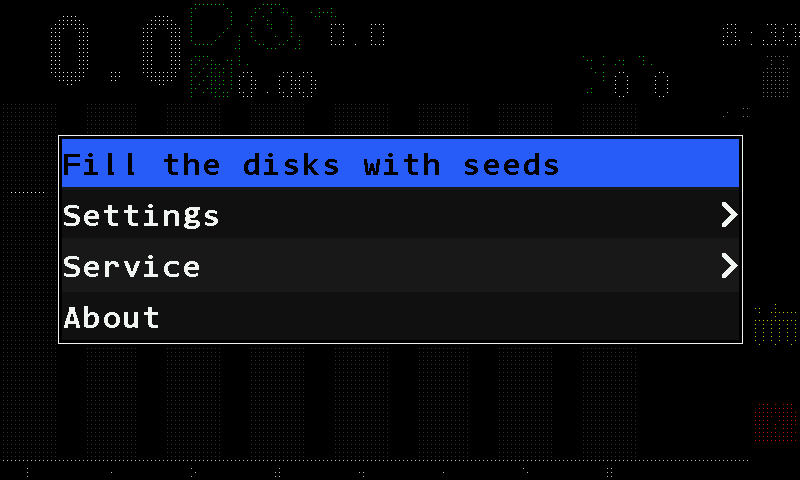

Remplir les disques de semences
Faire tourner les disques à graines d'un semoir monograine à moteurs de doseur jusqu'à ce que chaque disque contienne des graines, pour que le semis commence dès le premier mètre — comment le lancer et lire le résultat.
Cela ne concerne que les semoirs monograines à moteurs électriques de doseur de semences dans le mode de contrôle « Precise » (précis). Sans moteurs dans le profil, ou dans un autre mode, l'élément de menu n'est pas affiché.
Quand les disques sont entraînés par des moteurs électriques, ils restent vides tant que les moteurs ne tournent pas. Si vous démarrez avec des disques vides, les premiers mètres de chaque rang ne reçoivent rien : chaque disque doit d'abord prendre des graines et les amener jusqu'au point de chute. Le remplissage fait tourner les disques machine à l'arrêt, pour que le semis commence dès le premier mètre.
Arrêtez la machine. L'élément n'est affiché que lorsque la machine est à l'arrêt.
Sur l'écran d'accueil, touchez avec deux doigts. Le menu principal s'ouvre avec « Fill the disks with seeds » (remplir les disques de semences) déjà sélectionné ; touchez-le encore une fois.

Le menu principal avec Fill the disks with seeds sélectionné. Le panneau demande « Are you sure? » (êtes-vous sûr ?). Touchez « Yes » (oui). « No » (non), ou un toucher en dehors de la fenêtre, annule.

La question avant la rotation des disques. Regardez les tuiles. Chaque moteur fait tourner son disque jusqu'à ce que le capteur de graines de son rang enregistre la première graine. À la fin, le panneau émet trois bips et affiche « Operation complete. » (opération terminée).
Touchez « Close » (fermer) pour revenir à l'écran d'accueil.
Pour arrêter avant la fin, touchez « Cancel » (annuler) : les moteurs s'arrêtent aussitôt et reviennent à la régulation du semis.
Lire l'écran

- Tuile verte. Terminé : le capteur de graines a enregistré une graine, le disque est rempli.
- Tuile rouge foncé. Échec : le disque n'a pas pu être rempli. Le numéro du moteur est en rouge vif.
- Lettres de cause. Pourquoi la tuile a échoué — voir le tableau ci-dessous.
- « Operation complete. » Tous les moteurs ont terminé.
- « Close ». Ramène à l'écran d'accueil. Pendant que l'opération se déroule, ce bouton affiche « Cancel ».
| Tuile | État |
|---|---|
| Gris foncé | Attend son tour. Jusqu'à huit moteurs tournent en même temps ; les autres attendent. |
| Jaune | En marche : le disque tourne. |
| Vert | Terminé. |
| Rouge foncé | Échec. |
Chaque moteur fait tourner son disque à 4 tr/min de l'arbre entraîné. Si aucune graine n'est enregistrée en 1,25 tour — environ 19 secondes — ce moteur est arrêté et marqué en échec. Un moteur déjà en état d'alarme est marqué en échec aussitôt. Quand le mode de contrôle de l'engrais est aussi « Precise », les moteurs d'engrais sont lancés de la même façon.
Lettres sur une tuile en échec
La couleur de la lettre compte autant que la lettre : rouge signifie un défaut, blanc signifie mis hors surveillance.
| Lettre | Signification |
|---|---|
| m rouge | Un défaut du moteur électrique de doseur pendant l'opération. |
| m blanc | Le moteur est mis hors surveillance et ne peut pas tourner. |
| g rouge | Le capteur de graines n'a enregistré aucune graine pendant que le disque tournait. |
| s rouge | Un défaut du capteur de graines pendant l'opération. |
| s blanc | Le capteur de graines est mis hors surveillance. |
Si le capteur de graines est hors surveillance, le panneau ne peut pas contrôler le disque. Un moteur en état de marche le fait tout de même tourner pendant environ un tour et quart ; en pratique le disque se remplit donc — mais le panneau signale ce moteur en échec, parce qu'il n'a jamais vu de graine.
Votre machine fait quelque chose que cette page n'explique pas ? Écrivez à support@agriwelt.com — un ingénieur vous répond.